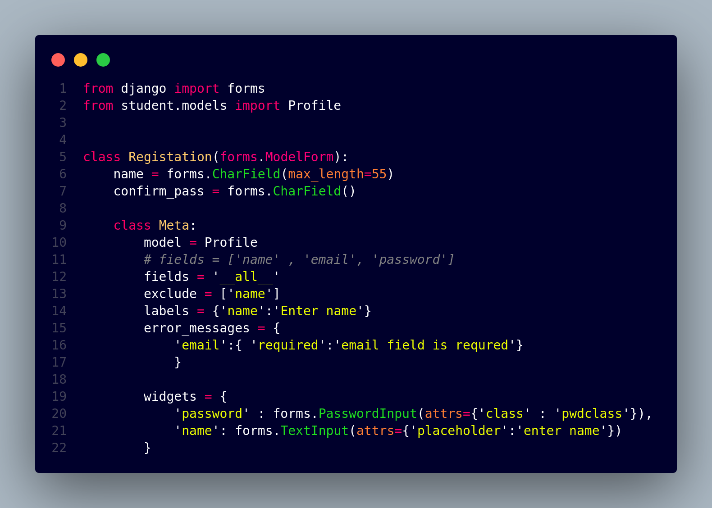

About Blood Donation
Importance of Blood Donation
Blood donation is a selfless act that saves millions of lives each year. Donated blood is vital for patients undergoing surgery, accident victims, those with blood disorders, and many other medical conditions. Your single donation can make a profound difference and offer a second chance at life to someone in need. It's a simple act with a monumental impact.
Who Can and Cannot Donate Blood
Who can donate: Generally, healthy individuals aged between 18 and 65, weighing at least 50 kg, and free from certain medical conditions or recent tattoos/piercings are eligible. Specific criteria may vary by region or blood bank.
Who cannot donate: Individuals with certain chronic illnesses, infectious diseases like HIV or Hepatitis B/C, recent surgeries, specific medications, or recent travel to malaria-prone areas may be deferred. Always check with your local blood donation center for detailed eligibility requirements.
Precautions Before and After Donating Blood
Before Donation:
- Get a good night's sleep.
- Eat a healthy, low-fat meal.
- Drink plenty of non-alcoholic fluids.
- Bring a valid ID.
After Donation:
- Keep the bandage on for several hours.
- Drink extra fluids and eat a light snack.
- Avoid strenuous activity or heavy lifting for at least 24 hours.
- If you feel dizzy, lie down with your feet elevated.